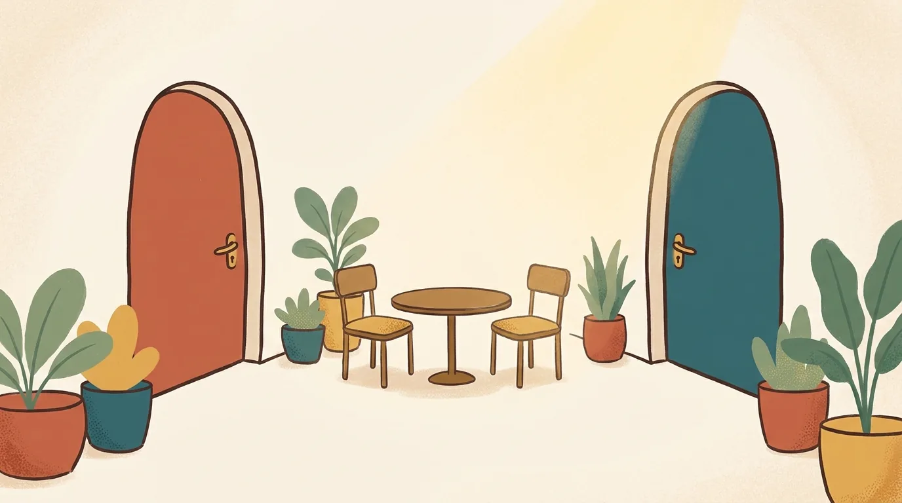

Premarital counselling for an arranged marriage.

You have met five times. Twice at home with both families in the next room, once at a café in Indiranagar, and twice on a video call because one of you was travelling for work. You like this person. You said yes, and you meant it.
Then the hall gets booked, and on the drive home it occurs to you that you know their salary, their sister's name and how they take their coffee, and you have no idea what they are like when they are angry.
That thought is not a warning sign. It is an accurate reading of where you are. You are getting to know someone and preparing to marry them in the same few months, and the calendar belongs mostly to other people.
We did premarital counselling before our own wedding, and it showed us small things we were already doing to each other that neither of us could see. We have been married thirteen years, and we now sit with engaged couples ourselves, including couples whose parents introduced them. This is what we would want you to know.
Is premarital counselling useful in an arranged marriage?
Yes. Premarital counselling for an arranged marriage gives two people who met recently an honest way to learn how the other thinks about money and family, about conflict and faith, before the wedding, with someone in the room keeping the conversation kind. It does not test the match and it does not decide anything for you.
Couples who dated for four years have had hundreds of ordinary afternoons to find out where they differ. You have had a handful of meetings, most of them polite. Counselling cannot give you those years. It can give you the conversations those years would have contained, in order, without waiting for an argument to start them.
There is a separate piece on what the sessions themselves look like. Everything in that piece applies to you. What follows is the part that is particular to meeting through your families.
What do families check, and what can nobody check?
Families check what can be seen from outside: work, education, the household, the community, often the horoscope. Nobody can check what only appears between two people over time, such as how each of you behaves when you are upset, what you assume about money, and what you expect a husband or a wife to be.
None of this is a criticism. Parents who make careful enquiries are doing a real job, and doing it out of love. A cousin in Chennai confirms the family is decent. An uncle knows someone at the office. All of that is worth having.
It is also a different kind of knowledge from the kind a marriage runs on.
| What the families' enquiries usually cover | What is left for the two of you |
|---|---|
| Job, income, education | What each of you believes money is for, and who decides |
| Family background and reputation | How your own household will run on a normal Tuesday |
| Community, language, faith tradition | How much that faith matters to each of you, day to day |
| Horoscope, where the family follows it | How each of you speaks when you are hurt |
| Health and habits, as far as anyone will say | What you each expect from in-laws, and they from you |
Nothing in the right-hand column is hidden on purpose. It has not been asked, because there has not been an occasion to ask it, and the people in the room during your first meetings were not the people to ask it in front of.
What is different about counselling when you met through your families?
The subjects are the same as for any engaged couple. What differs is where you start from: less shared history, a yes given on limited information, families who are part of the decision, and two people still on their best behaviour. The work has to allow for all four.
You have not disagreed yet. Most couples who come to us after years together can name their repeating argument within a minute. You do not have one. That sounds like good news, and partly it is. It also means neither of you has seen how the other handles being crossed. We would rather you found that out in a quiet room than in the first month of marriage, in a house full of relatives.
The polite phase lasts until the wedding. In an arranged match both people are presenting well, and so are both families. Everyone is agreeable. It is a lovely season and a poor source of information. This is where the Prepare/Enrich assessment earns its place. You each answer it separately, online, before the first session. Nobody has to be impolite for a difference to surface. The report shows it, and then the four of us talk about it as a fact on the table and not an accusation anyone made.
Your families are in the marriage from day one. Often literally, under the same roof. So we spend real time on it: where you will live, what a daughter-in-law or a son-in-law is expected to do in each home, and what the two of you will say, together, when those expectations are more than one of you can carry.
The yes came first. In a love marriage the knowing comes before the commitment. For you it is the other way round, and there is nothing wrong with that order. It does mean the months before the wedding are for knowing, and they are easily swallowed whole by guest lists and caterers.
How do you suggest it without it sounding like doubt?
Say what it is for. You are not asking because you are unsure of the person. You are asking because you are sure, and you would like to start well. Put that first, in your own words, and most of the awkwardness goes before it arrives.
This is the real obstacle, more than time or cost. In many families the word counselling still means something has gone wrong. Bringing it up three months before a wedding can sound, to a nervous ear, like the first step towards calling things off.
To the person you are marrying, something like this works: "I'm happy about us. We haven't had much time, and I'd like us to talk through the big things with someone who does this for a living, so we're not guessing." Then send them something to read and let them think about it. A person who feels pushed into a counselling room says very little once they are in it.
Parents usually need a different sentence. Many of them will understand it fastest as preparation, the way a couple in their generation might have sat with an elder or a priest before the wedding. "We want to prepare properly" is true, and it is a reason few parents argue with. Some will even be relieved.
If your partner is wary, we offer a free 30-minute call, and the two of you can take it together with no obligation after it. Meeting us often settles more than any description could. We are a married couple with two children, not a panel.
What do you talk about in the sessions?
Whatever the assessment shows you see differently, along with the subjects that matter in nearly every marriage here. How you each speak when upset. Money, including support for parents. In-laws and where you will live. Who does what at home, and whether both of you will work. Children, faith and affection. No two couples cover the same ground.
Two of these deserve a word for couples who met recently.
One is how you each show care. Gary Chapman's book The Five Love Languages is part of how we work, and it changed something in our own marriage. One of you may feel loved when the other makes time. The other may show love by quietly getting things done. Couples with years behind them have usually stumbled on this. You can learn it in an evening, before either of you has had the chance to feel overlooked.
Then there is the conversation about what each of you was told. In an arranged match, a good deal of information travels through relatives, and it gets rounded off along the way. She was told he is open to her working after marriage. He was told she is happy to move to his parents' home in Mysuru. Neither said quite that. Here is a pattern we see often, described as a composite and not any real couple: both families are sincere, both young people are agreeable, and four months after the wedding two people discover they each married a summary. A session where you ask each other directly, "what were you told about me, and is it right?", is one of the most useful hours we spend with anyone.
For the conversations you can have on your own between meetings, we put together questions worth asking before you marry, with a section on arranged introductions.
Is there enough time before the wedding?
Usually, yes. Our sessions run ten to fifteen days apart, so ten weeks allows four or five sittings, which is enough for the subjects that matter most. With less than a month left, begin anyway. Some of the work can continue after the wedding, and it is better started than postponed.
Arranged weddings move quickly. Four months from first meeting to wedding day is common, and the last three weeks belong to tailors and relatives arriving from out of town. So count backwards. If the wedding is in December, September is the moment to start. Take the assessment early, since it needs a quiet evening from each of you and nothing else.
That gap between sessions matters more for you than for most. You are still meeting each other in between. Something said in the room on a Saturday will come up again on Wednesday's phone call, and that second conversation, without us, is where much of the good is done.
If the date is very close, tell us on the first call. We will be honest about what can be covered and what is better left until you are back from the honeymoon.
What if one of you lives in another city or country?
Then the sessions happen online, with each of you joining from wherever you are. We work in person in Byrathi by preference, and online whenever a client is in another city or abroad. Many arranged matches in Bangalore involve one partner in the Gulf, the US or another Indian city until the wedding.
Distance sharpens the need. A couple who can only talk on calls, across a time difference, with one of them just off a night shift, tends to keep those calls light. Who wants to spend the one good hour of the week on a hard subject? A scheduled session gives the hard subject its own hour, and leaves your other calls free to be enjoyed.
We hold sessions in English, Tamil and Kannada. If the two of you share a mother tongue but have been courting in careful English, try a session in the language you grew up in. People are often more themselves in it.
Is it normal to have doubts before an arranged marriage?
Yes. Nearly everyone feels some doubt before a commitment this large, and more so when the person is still new to you. Doubt about whether you know enough is reasonable, and it is what these months are for. Counselling is a good place to say it aloud. We will not decide anything for you.
People search for "cold feet before arranged marriage" late at night, a few weeks before the date, and feel guilty for typing it. Most of what they are feeling is the ordinary weight of a big decision made on a short acquaintance. It tends to ease as the two of you talk about real things, because the unknown gets smaller.
Some doubts are about a particular subject: where you will live, whether you can keep working, how much say his mother will have. Those are questions, and questions can be asked. Bring them.
One thing is different, and we want to say it plainly. If what you feel is fear of the person, or if you did not feel free to say no to this match and still do not, that is not cold feet. A yes has to belong to the person giving it. Please talk to someone you trust outside both families. You can also take our free call on your own. It is confidential, and nobody in either family will hear of it from us. If you are ever in danger, call 112.
Will our parents be involved?
Not in the sessions. Premarital counselling is for the two of you, and nothing said in the room is passed to either family, whoever made the introduction and whoever is paying. Your parents will come up constantly in the conversation, because they are part of your marriage, but they are not in the room.
Some couples worry that this shuts their parents out. We see it the other way. Two people who have agreed between themselves how they will treat both sets of parents are easier for those parents to live with. The first year goes more gently for everyone when the couple already speaks with one voice, and speaks it kindly.
Common questions
Should we go before saying yes, or after? After, in most cases, once the match is agreed. The work is about preparing for a marriage, and it needs two people who have both chosen to be there. If you are still deciding, the questions to ask each other are the better place to start.
Will the assessment tell us whether we are compatible? No. Prepare/Enrich has no pass mark and gives no verdict. It shows where your answers agree and where they differ, and the differences become the agenda. We have never used it to tell a couple whether to marry, and we would not.
What if my partner's family thinks counselling means there is a problem? That is common. Describe it as preparation, which is accurate. If it helps, your partner can speak to us first on the free call and explain it at home in their own words.
We are from different communities or languages. Does that change anything? It adds subjects: whose customs the wedding follows, what language your children will speak at home, how festivals are divided between two families. They are easier to settle now, when everyone is still being generous with each other.
Do we have to be religious? No. We are a faith-informed practice and say so openly. If you would rather keep faith out of it, we work that way too, and the work is just as good.
Where to begin
Tonight, ask the person you are marrying one question: "What were you told about me that you'd like to check?" Answer it yourself first. It is a light way into an honest conversation, and you may both end up laughing at what the aunties got wrong.
If you would like company for the rest, read about how we work with engaged couples, find out who we are, or book the free 30-minute call. It is confidential, and you can take it together or alone.
Some couples prefer a fixed course with other couples alongside them. Marriage Ready is our six-week online premarital course on Zoom, for six to eight couples, on Fridays from 7:00 to 8:30 pm IST. The introductory cohort begins on 13 November 2026, the Prepare/Enrich assessment is included, and couples in the Gulf join the same session as couples in India.
You chose each other quickly. The months before the wedding are for choosing each other well.
Written by Pradeep Mcwin (M.A., Marriage and Family Counselling) and Gomathi Mcwin (Diploma, Marriage and Family Counselling), who have practised together in Bangalore for over five years and have been married for thirteen.
This article is for information and is not a substitute for personal counselling. Every relationship is different. If something here sounds like your situation, start with a free, confidential 30-minute call.